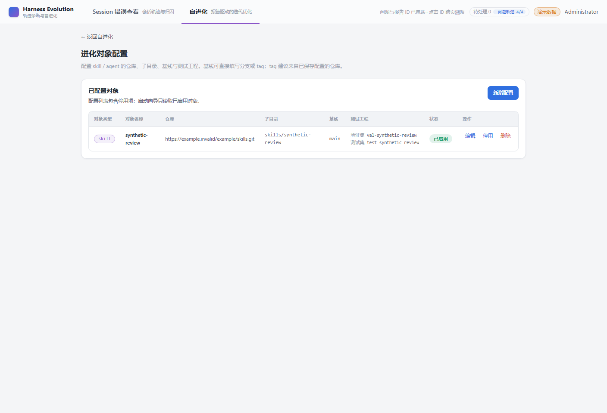
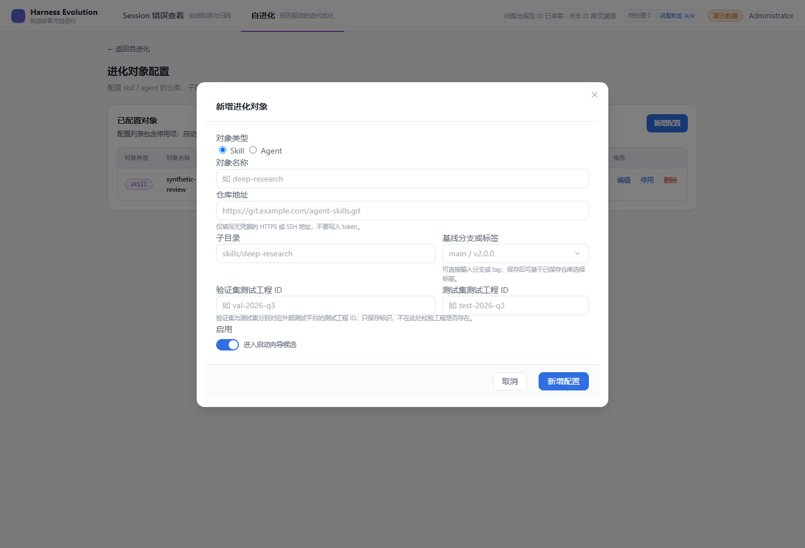
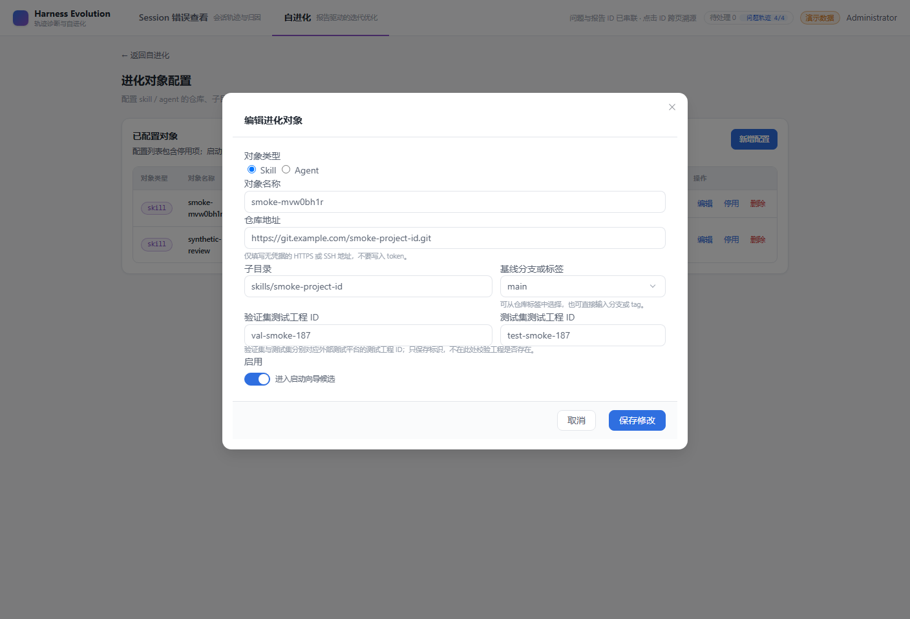
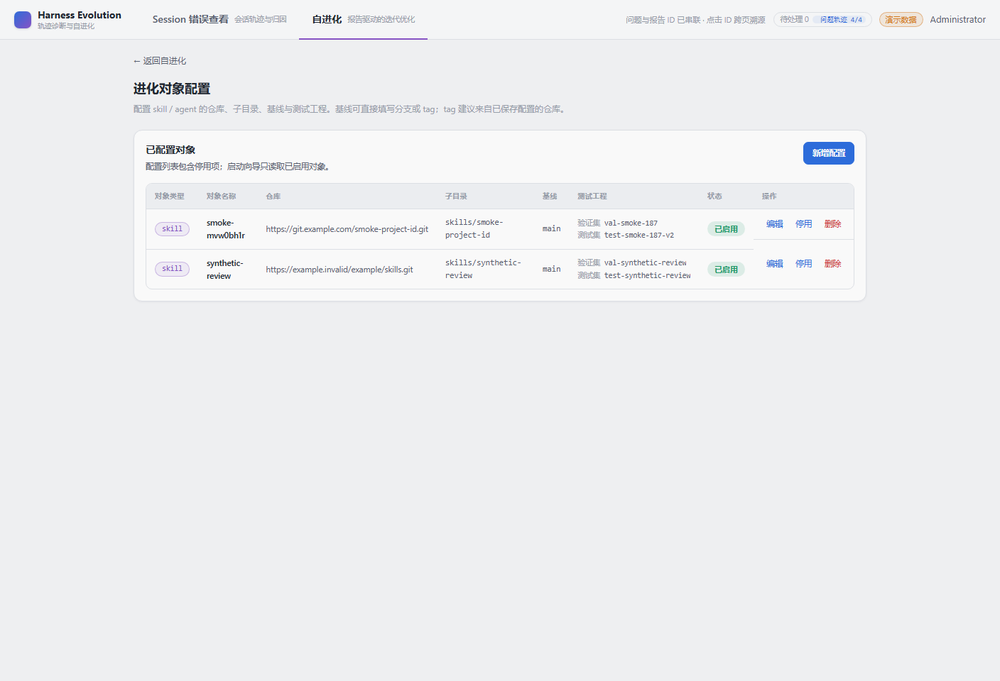

- Issue
- #187 m6-20
- PR
- #189
- 后端
- FastAPI + SQLite + fixtures:seed
- 前端
- Vite dev server（apps/web）
- 模拟服务
- Node HTTP：children + trajectory
- 浏览器
- headless Chrome，CDP 驱动
- 账号
- admin（首次登录改密流程真实走通，密码 <redacted>）
REAL BROWSER · FASTAPI · MOCK SESSION QUERY
Issue #187 冒烟测试：进化对象测试工程 ID
在真实 FastAPI、Vite、SQLite 与 headless Chrome 上验证新增/编辑浮窗的两个必填工程 ID、列表合并列，以及模拟的会话查询接口 1/2 被 bad_case 同步真实调用。
8冒烟场景
8接口 1 调用
8接口 2 调用
4已同步 root
Environment and Artifact
2026-10-31 · Windows · Chrome 1440x960Scenario Matrix
8 pass| # | 场景 | 结果 | 实际断言 | 证据 |
|---|---|---|---|---|
| 01 | 打开进化对象配置页 | PASS | 管理员登录后进入 /evolution/targets，页头与新增入口可见。 | screenshots/01-target-list.png |
| 02 | 新增浮窗渲染两个必填字段 | PASS | 两个输入存在且带 required 星号，空提交被本地校验阻止。 | screenshots/02-create-dialog.png |
| 03 | 新增对象持久化两个工程 ID | PASS | POST 后 API 与列表都返回 val-smoke-187 / test-smoke-187。 | screenshots/03-created-row.png |
| 04 | 编辑浮窗回填两个工程 ID | PASS | 编辑态两个输入自动回填已保存值。 | screenshots/04-edit-dialog.png |
| 05 | 编辑只改一个工程 ID | PASS | PUT 后 testProjectId 更新，validationProjectId 保持 val-smoke-187。 | screenshots/05-updated-row.png |
| 06 | 模拟查询接口 1（children）被调用 | PASS | 模拟服务收到 8 次 /sessions/{id}/children 调用，全部带 Bearer 令牌。 | mock-requests.json |
| 07 | 模拟查询接口 2（trajectory）被调用 | PASS | 模拟服务收到 8 次 /sessions/{id}/trajectory 调用，返回 NDJSON 并触发归一化。 | mock-requests.json |
| 08 | bad_case 根会话同步状态 | PASS | acquisition/status：total=4，synced=4，failed=0，status=idle。 | acquisition-status.json |
Issues and Observations
No defects foundNo defects were found.
Evidence
5 screenshots



Automated Coverage Assessment
3 areas reviewed| 区域 | 覆盖 | 结论 | 建议 |
|---|---|---|---|
| Target 表单/列表 | Web 单测 + E2E + 本冒烟 | 必填、回填、更新、合并列均有真实浏览器证据。 | 保持 E2E 作为合并前门禁。 |
| API / DB 迁移 | API 单测 + SQLite/MySQL CI | 两字段 required、422 明细、历史行空串与 run 快照均有断言。 | 迁移 0013 回滚前导出 ID。 |
| 模拟查询接口 1/2 | 模拟服务 + bad_case 同步 | 两个接口被真实调用，接口 2 返回 NDJSON 并进入归一化。 | 真实上游就绪后替换 base URL 与 token。 |
Conclusion
核心链路通过8 个场景全部通过；新增/编辑浮窗、列表列、API 持久化、run 快照与两个模拟查询接口均得到验证。
- 历史 target 的工程 ID 为空时，启动 run 仍会得到空快照；评测入口需要补校验。
- 模拟服务只验证协议与调用链，不代表真实测试平台的鉴权/版本行为。
- 报告中的密码与令牌已脱敏。
Generated from report-data.json by computer-use-smoke-reporting renderer.